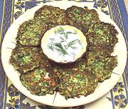

|
Zucchini Patties w/ White CheeseTurkey - Kabak Mücveri | ||||
| Serves: Effort: Sched: DoAhead: |
6 app ** 1-1/2 hrs Yes |
A flavorful warm appetizer or breakfast dish, and a good way to keeping the garden zucchini under control. This recipe makes from 16 to 18 patties. | |||
|
1-1/2 1/2 1 1 1/2 1/2 1 1/2 1-1/2 3 a/r ------ |
# t c t c c T oz --- |
Zucchini (1) Salt Egg Egg Yolk Flour Salt Parsley (2) Scallions Dill White Cheese (3) Olive Oil (4) -- Serve With Yogurt |
Used for breakfast this recipe will serve 3 to 4 depending on appetite. Zucchini patties can be made ahead and rewarmed in a 375°F/190°C oven for about 10 minutes (see Note-6). Prep - (1 hr (hand chopping herbs))
|